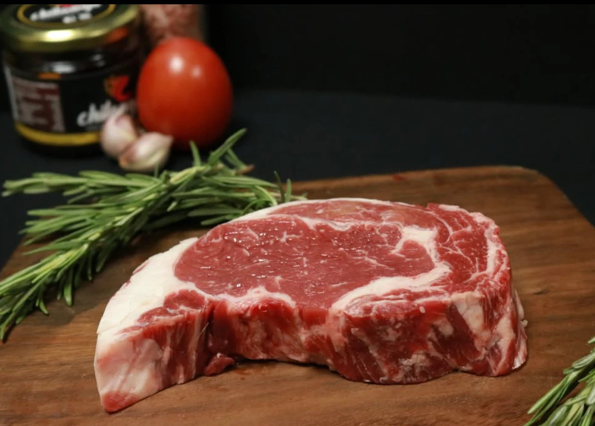
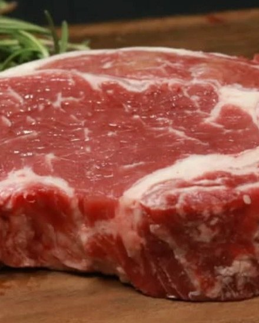
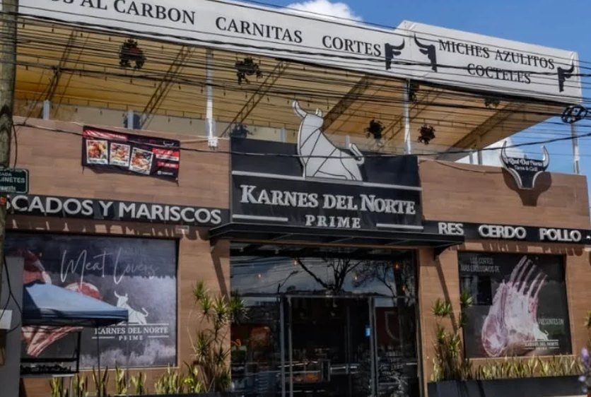

Primero, el fuego
Enciende el carbón media hora antes y espera a que la brasa se cubra de ceniza blanca.
Carnicería boutique con cortes premium y productos de alta calidad: res, pollo, cerdo y mariscos.
Ver los cortes


{{BANDCAP}}
Además de res: pollo, cerdo y mariscos. Tiempos orientativos para cortes de 2.5 cm sobre carbón bien encendido.
Tres cosas que separan un buen asado de uno cualquiera.
Enciende el carbón media hora antes y espera a que la brasa se cubra de ceniza blanca.

Las vetas blancas dentro de la carne son las que la vuelven jugosa sobre el carbón. Pídela bien marmoleada.

Sala al poner la carne, voltéala una sola vez y déjala reposar cinco minutos antes de rebanar.
¿No sabes qué corte pedir? Nosotros te ayudamos: dinos cuántos son y qué cortes quieren. Contamos 350 gramos por adulto y la mitad por niño.
3.20kg
de carne en total
Nuestra única sucursal, en el Estado de México.
Abrimos de 8:00 a 19:00 h
Única sucursal, única calidad, única Karne Prime.
